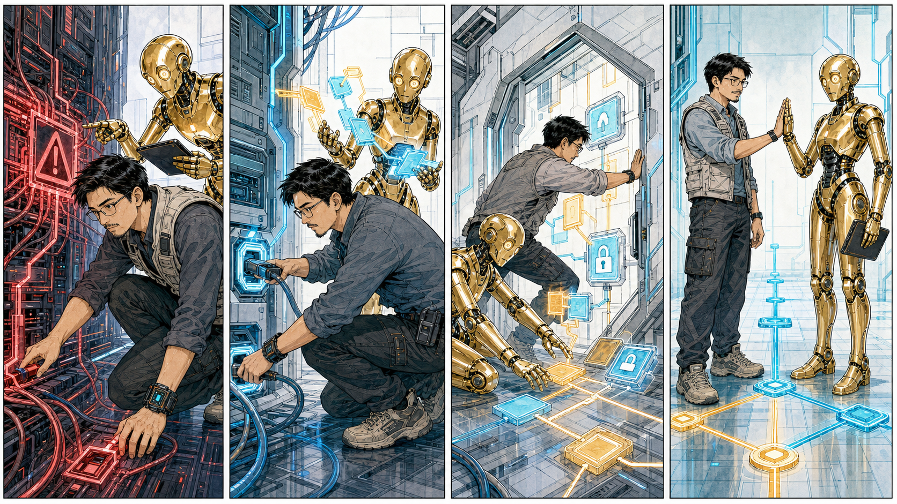
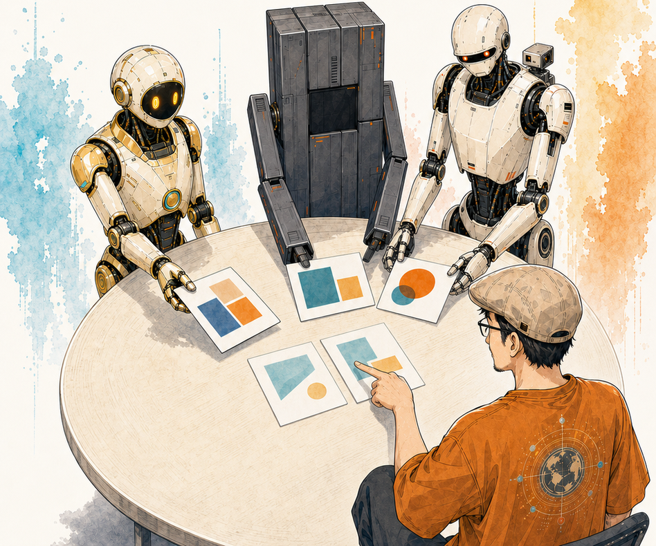

现在到处都是提示词教程：怎样给 AI 设定角色，怎样写一个精确的开场白，怎样把回答调到理想状态。但我已经不再把主要精力放在提示词上了。使用 Agent 一段时间以后，我发现真正决定协作质量的，并不是一句话写得多漂亮，而是我怎样理解它、怎样提供信息，以及怎样保留人的判断。
下面这五条不是普遍定律，而是我现阶段最有效的一套工作方法。它们有些甚至与流行教程相反，但在真实项目里，它们让我与 Agent 的关系从“操作一个工具”，慢慢变成了“和一个认知能力很强的专业同事一起工作”。
这里说的“不需要”，主要是指那种仪式化的角色提示词：“你是一位世界顶尖的营销专家”“你是一位有二十年经验的程序员”。在我现在的使用方式里，这种开场白已经不再重要。Agent 会从任务、项目文件和持续沟通中判断自己该承担什么角色，也会知道需要调用哪一类专业能力。
角色不是由一句称呼赋予的，而是由任务定义的。让我帮网站排版，它就要像编辑和前端工程师一样工作；让我检查品牌视觉，它就要理解设计系统；让我梳理口述，它就要先成为一个结构化写作者。真正有效的信息，是我要解决的问题、已有材料、不能改变的约束和我如何判断结果。
提示词当然没有彻底消失。在编写底层功能、定义一个新的 SKILL 时，仍然需要精确的指令。但即使在这个场景里，也不必由我从零雕琢提示词。我只需要说清楚目标与边界，让 AI 帮我把要求写成它可以稳定执行的规则。
“你是一个 XX 专家”的开场白，是过时的仪式。角色不是人赋值的，是任务定义的。
我一直用一个很强的假设来面对大模型：先把它当作拥有全人类知识的系统。这里不是说它永远正确，也不是说它不会遗漏和编造；它更像一种使用姿态——不要在开始之前就替它划定一个很低的能力上限。
很多时候，问题不是 AI 不懂，而是我还不知道怎样把它的能力引出来。我没有提供足够背景，没有把资料放进同一个上下文，没有让它比较不同方案，也没有继续追问第一轮答案里被忽略的部分。最后得到一个普通的结果，就误以为模型只能做到这里。
人的认知会限制 AI 的发挥。我们只会提出自己想得到的问题，也很容易只接受自己熟悉的答案。所以我会主动让 Agent 给出我没有想到的路径，解释为什么，并指出我的假设中可能存在的漏洞。它仍然需要验证，但验证应该发生在看过它真正能提出什么之后。
开始使用 Agent 框架以后，很容易陷入一种新的收藏欲：看到一个 skill 就下载，看到一套工作流就安装。仓库里很快堆了几十个能力包，真正使用的可能只有三四个。它们之间还可能重复、冲突，或者把不适合自己的规则一起带进项目。
我的做法相反：不直接把一个 skill 当成答案，而是让 Agent 先分析它。里面解决的是什么问题？哪些经验适合我？哪些规则已经存在于当前系统？哪些部分应该合并，哪些部分应该放弃？分析之后，再让 Agent 根据我的工作方式长出一个新的 skill。
这样做的重点不是追求“自研”，而是让能力真正进入自己的系统。现成 skill 是材料，不是收藏品；适合别人的完整结构，也许只需要抽取其中两条原则。我的 skill 基本都由 Agent 根据实际要求编写，我负责说明场景、审查边界，并在真实任务里不断修正。
下载是囤积，分析才是消化。
很多人因为怕自己“不会提问”，在开口之前就开始删减和修饰。我的经验恰好相反：如果想法还没有成形，就把那些混乱也交出来。想到的背景、犹豫、例子、反例和不满意的感觉都可以说。只要信息足够多，Agent 往往能从中看出结构。
与人沟通时，我们必须顾虑对方的时间和认知背景。讲得不够清楚，对方可能误解；讲得太长，对方可能失去耐心。Agent 对大量信息的耐受度更高，也更擅长回看上下文，把反复出现的线索提炼成主题。
所以啰嗦不是缺点，是信息量。当然，这不代表永远不要整理，而是把整理放到正确的位置：先尽可能完整地表达，再让 Agent 归纳；看过归纳结果以后，我再指出哪些是重点、哪些理解错了。这个循环比在开口前苦苦寻找一句完美提示词更有效。

我愿意让 Agent 先给建议，因为它可以同时调动的知识、方案和检查角度，经常超过我最初的预想。如果我一开始就把做法写死，它只能在我设定的狭窄路径上执行；如果先让它提案，我通常能看到第二种、第三种可能。
但信任 Agent，不等于把决定交出去。一个方案是否适合我的品牌、资源和长期方向，最终仍然由我判断。有些答案技术上成立，却不符合我想要的气质；有些建议看起来高效，却增加了不必要的系统复杂度。这些取舍离不开人的偏好和责任。
人也不只是被动选择。我的想法同样要交给 Agent 分析：它是否可行，有什么风险，有没有遗漏？Agent 的方案由人判断，人的方案也由 Agent 验证。双方都可以提出，双方都接受检查，最后由承担结果的人裁决。
Agent 负责提案，人负责裁决。双向验证，是我目前认为最稳的人机协作结构。

不迷信提示词，是因为任务和上下文比角色扮演重要；假设模型拥有广泛知识，是为了不提前压低它的能力；克制地使用 skills，是为了让能力经过消化；允许自己啰嗦，是为了先交付足够信息；保留最终裁决，则是为了让技术能力始终服务于人的方向。
这篇文章本身就是这套方法的一个例子。我先后口述了两段并不整齐的想法，Agent 把它们梳理成五个主题；我们再把主题变成卡片、漫画、视频和这篇长文。表达由我开始，结构由 Agent 提案，最后的文字和取舍仍然回到我这里。
一句话总结：把 Agent 当成认知能力很强的专业同事，而不是一个等待你用神奇咒语调教的工具。